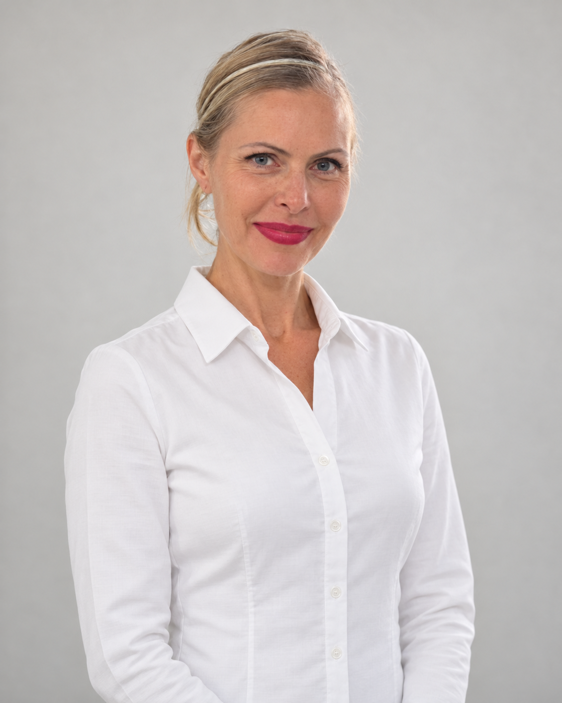
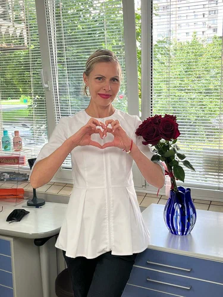
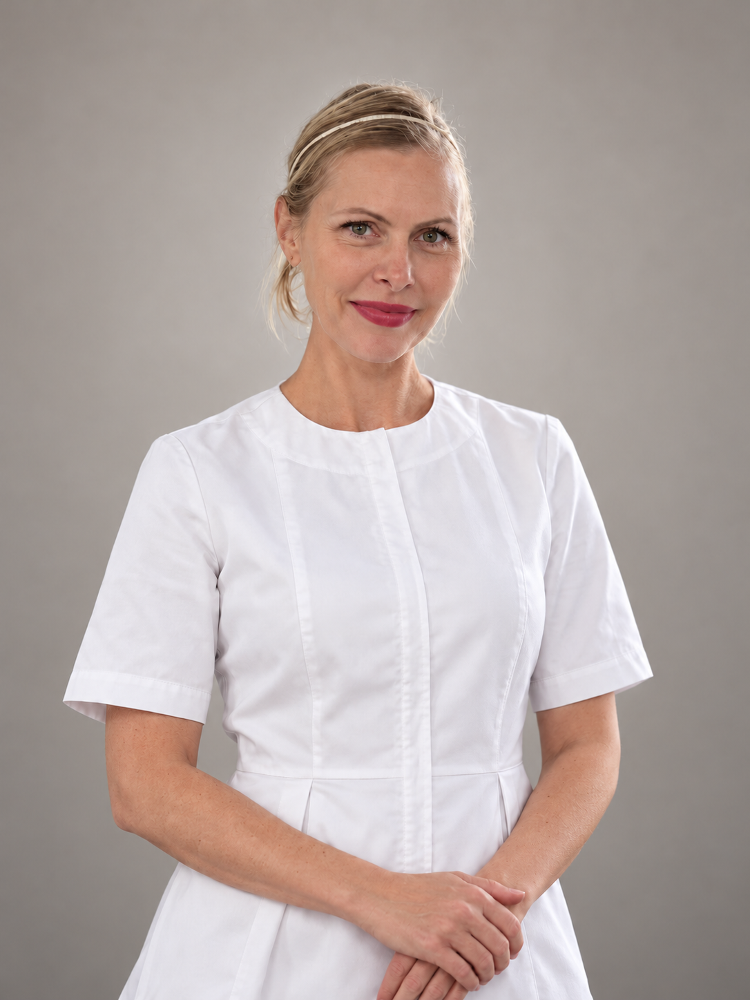

Жигулева
Татьяна Сергеевна
врач-стоматолог-терапевт
МЕДИА · СТОМАТОЛОГИЧЕСКАЯ КЛИНИКА
Наша клиника – это пространство, где передовая медицина встречается с искренней заботой о каждом пациенте.
Подберем удобное время, составим честный план лечения и ответим на все вопросы
Доверьте свою улыбку профессионалам с большим опытом работы и безупречной репутацией!
«Здравствуйте! Меня зовут Татьяна Сергеевна Жигулева, я главный врач стоматологической клиники «Медиа». Наша клиника – это пространство, где современная медицина встречается с искренней заботой о каждом пациенте. Уже более 25 лет мы помогаем взрослым людям обретать уверенность в себе, полностью избавившись от страха перед стоматологами. Мы создаем место, где ваше лечение будет абсолютно безопасным и результативным. Наша главная цель – сделать ваше лечение именно таким. Добро пожаловать в стоматологическую клинику «Медиа», где лечат с уважением и заботой!»

3-й этаж
Пн—Пт 09:00–20:00 · Сб 09:00–15:00
Воскресенье — выходной
Вход в клинику через крыльцо с надписью Магнит, проходите до лифта и поднимаетесь на 3 этаж. Въезд и парковка для клиентов — со стороны улицы Фрунзе.
Электронная почта организации:
mediaclinica@mail.ru
ООО «МЕДИА»
ОГРН 1245400032680 ИНН 5405098530
Юридический адрес: 630112, Россия, Новосибирская область, г. Новосибирск, ул. Фрунзе, д. 71/1, офис 2
Фактический адрес: 630112, Новосибирская область, г. Новосибирск, ул. Фрунзе, д. 71/1, офис 2, 3-й этаж (подъём на лифте).